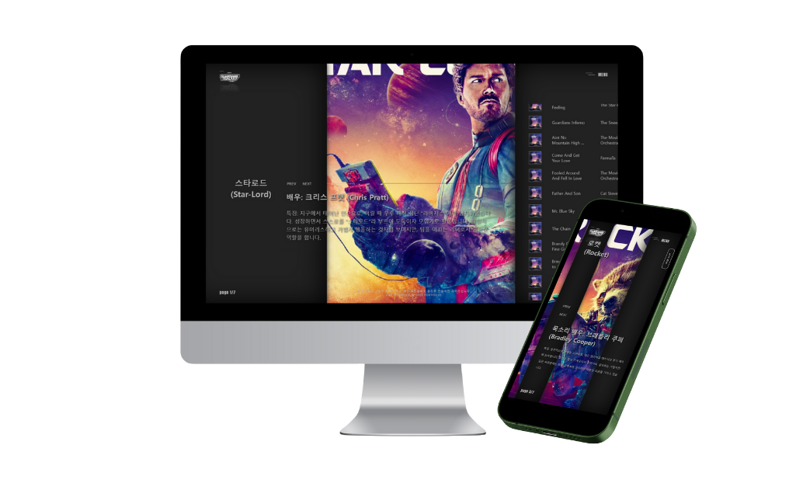
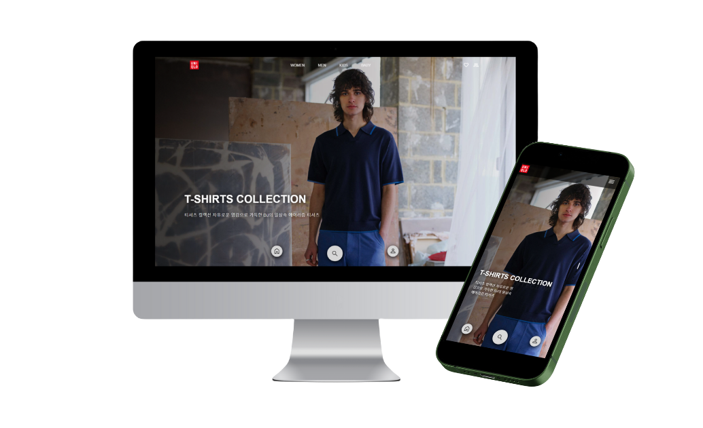
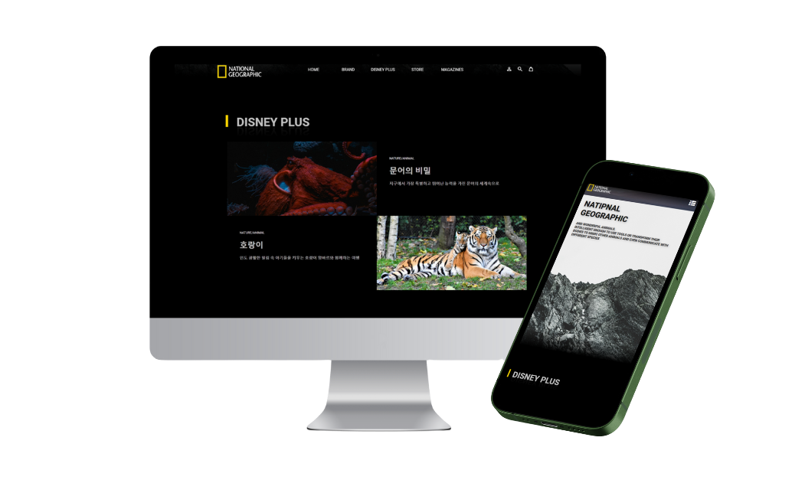
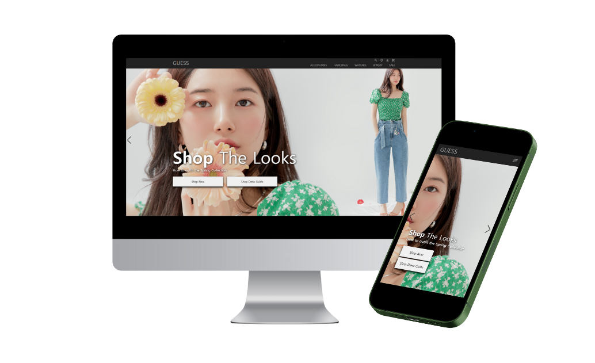
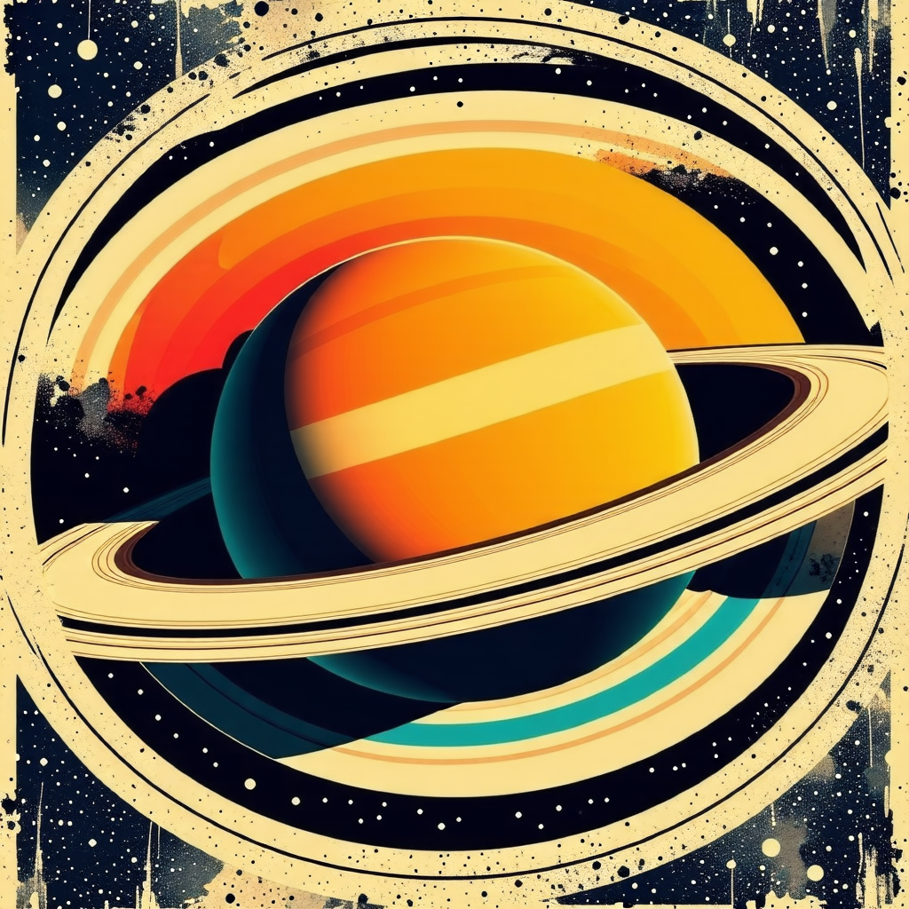
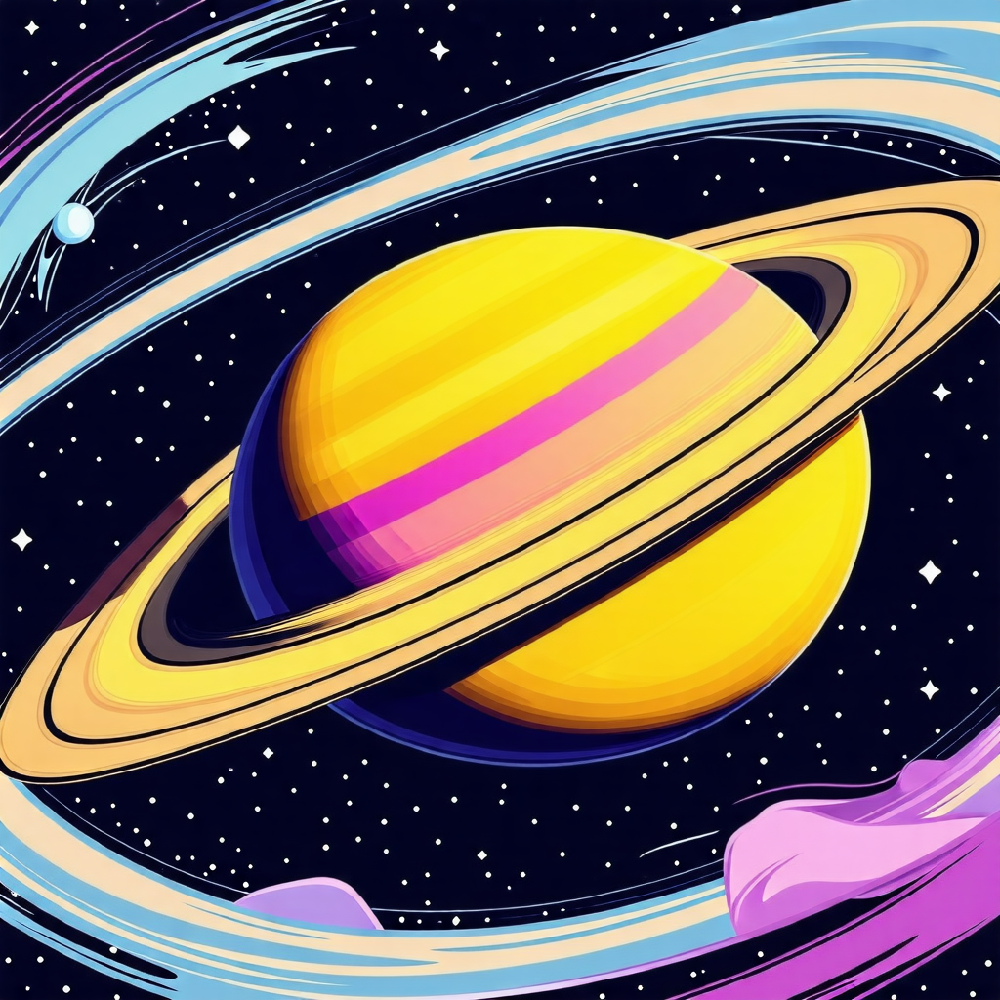
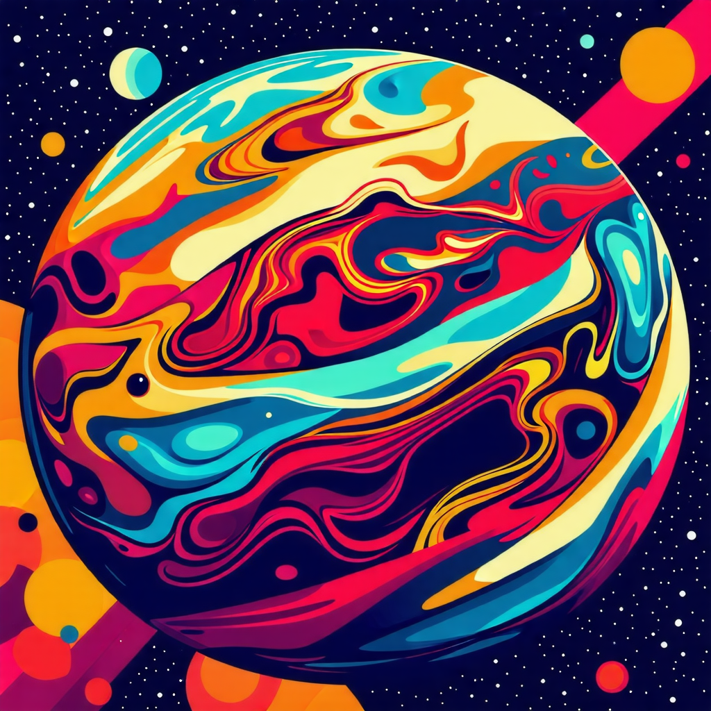

WORK
_
PROJECT
PLAY_LIST

QLO
GEOGRAPHIC
SS
SOON
GUARDIANS_PLAY_LIST
#HTML #CSS #JAVASCRIPT #JQUERY
가디언즈 오브 갤럭시에 대한 간략한 배우 소개와 OST 감상 기능을 제공하는 웹사이트입니다. jQuery와 IntersectionObserver를 사용하여 부드러운 가로 스크롤을 구현했습니다.
UNI_QLO
#HTML #CSS #JAVASCRIPT #JQUERY
HTML, CSS, JavaScript를 사용해 제작되었으며, Swiper 플러그인을 통해 통 이미지 화면 전환 기능을 구현했습니다. 반응형 디자인으로 제작되어 다양한 기기에서 최적화된 화면을 제공할수 있도록 제작되었습니다.
NATIONAL_GEOGRAPHIC
#HTML #CSS #JAVASCRIPT #JQUERY
IntersectionObserver를 활용하여 섹션이 뷰포트에 들어왔을 때 해당 섹션이 보이도록 구현한 반응형 사이트 입니다.
GUESS(제작중)
#REACT #HTML #SCSS #CSS #JAVASCRIPT
이 웹사이트는 React로 제작되었으며, 재사용 가능한 컴포넌트와 props를 통해 유연한 데이터 전달 및 유지보수를 간편하게 했습니다. Swiper 컴포넌트를 사용해 3초마다 자동 슬라이드 전환이 이루어지는 비주얼 섹션을 구현한 사이트입니다.
ABOUT_
ME
안녕하세요.
웹 퍼블리셔 김연덕입니다.
HTML과 CSS로 간단한 웹 페이지를
만들어보던 순간부터,
코딩에 대한 열정이
저를 사로잡았습니다.
코드 몇 줄로 눈앞에서 변하는 화면은 마치 마법 같았고,
그 순간부터 웹 개발이라는 세계에
깊이 빠져들게 되었습니다.
-

시맨틱한 마크업 작성으로 웹 표준을 준수하고, SEO와 접근성을 고려한 구조 설계 능력을 갖추고 있습니다.
H_
TML -
미디어 쿼리를 활용한 반응형 디자인과 애니메이션 효과를 구현해 사용자 경험을 개선할 수 있습니다.
C_
SS -

중첩 구조와 변수, 믹스인 등의 기능을 활용해 효율적이고 유지보수 가능한 스타일링을 작성합니다
S_
CSS -

DOM 조작과 이벤트 처리로 웹 페이지에 인터랙티브한 기능을 추가할 수 있으며, 다양한 기능을 구현할 수 있습니다.
JAVA_
SCRIPT -
간결한 코드로 빠르게 웹 요소를 제어하고 애니메이션 및 이벤트 관리를 효율적으로 처리할 수 있습니다.
J_
QUREY -

디자인툴을 활용해 UI/UX 기획 및 와이어프레임, 프로토타입 제작 경험이 있습니다.
FI_
GMA -

Git을 활용한 버전 관리와 협업을 통해 프로젝트의 효율적인 진행과 코드 관리가 가능합니다.
GIT_
GITHUB -
React를 활용해 재사용 가능한 컴포넌트를 제작하고, props로 데이터 전달을 유연하게 처리가능합니다.
RE_
ACT
저는 이런사람이에요
성장과정
성격의 장단점
가치관 및 신조
지원동기 및 포부
성장과정
방을 보면 그 사람의 습관이나 인식 체계를 대략 알 수 있듯이, 저는 주어진 물건을 그저 되는 대로 늘어놓기보다는, 일정한 규칙과 메커니즘에 따라 그 앞뒤 순서를 바꿔가며 시험해 보는 것을 무척이나 즐겼습니다. 예를 들어, 레고를 설명서대로 그대로 만들어보고 나서 다시 설명서에 적혀있지 않은 저 나름의 방식으로 여러 가지를 재조립해 보았습니다. 레고의 작은 조각 하나하나를 맞춰가며 완성된 작품을 친구들에게 보여주는 일은 큰 기쁨이었습니다. 이러한 저의 성향에 맞는 직무를 찾다보니 웹퍼블리셔라는 직무가 가장 저에게 적합하다는 것을 알게되었습니다. 웹퍼블리셔 또한 일정한 코드와 메커니즘에 따라 설계를 진행해야하며 또한 전체적인 그림은 디자인 감각을 사용하여 미적으로도 메커니즘으로도 완벽한 작품을 이끌어내는 것이 매우 흡사하다고 생각하였습니다. 그렇기에 저는 저만의 완벽한 웹퍼블리싱 작품을 완성하기 위하여 지금도 역량을 상승시켜나가고 있으며 해당 직무에 대한 전문성을 갖추기 위해 걸어나가고 있다고 자부하고 있습니다.
성격의 장단점
목표를 설정하여, 단계별 업무 수행과 추진력을 보입니다. 약 5년 동안, 온라인쇼핑몰을 운영하며 매출 상향 및 자기 계발에 대한 목표를 설정하였습니다. 종합 몰의 개념으로 다양한 사용자 및 고객들의 요청이 있었으며 초기 단계부터 상품 구성, 페이지 구축, 키워드 설정, 배송 방법 등 여러 요소를 파악해야 했습니다. 파악한 요소를 기반으로 가장 효율적이고 전문성있는 업무 프로세스를 구축하는 것에 힘을 썼습니다. 또한 서비스 업무 특성상 다양한 성향의 고객들을 접하였고 불필요한 요청을 하는 경우도 다수 발생하였습니다. 대부분 배송지연에 관한 클레임이었으며 이를 해결하기 위한 배송관련 고객 응대 매뉴얼을 설정하여 다수의 고객 클레임을 빠르게 해결할수 있었습니다. 현재는 퍼블리셔로서 목표를 설정하였기에 직무에 있어 저만의 업무 프로세스를 빠르게 구축할 것이며 또한 쇼핑몰 운영을 통해 향상시킨 고객대응방법을 기반으로 클라이언트들의 만족도를 높혀 재의뢰까지 이끌어갈 수 있는 역량을 보여드리겠습니다.
가치관 및 신조
인생을 올바르게 살기 위해서는 성실함인 가장 기본적 요소가 되어야 합니다. 나태함은 개인의 발전과 공동체 목표 달성에 부정적 영향을 주기에, 직접 실행하고 도전하는 자세를 지향해 왔습니다. 약 2년 동안, 온라인 판매 업체에서 불법물 모니터링 업무를 수행하며 성실함을 보여왔습니다. 저의 주 업무는 위해 물품을 분석하고 판매 차단을 실시하여 소비자들에게 안전할 권리를 제공하는 직무였습니다. 당시 기업의 분위기가 오프라인 소통보다는 온라인으로만 내용을 전달하는 체계였습니다. 업무 초기에는 빠르게 일을 적응하기 위해 자발적인 자세가 필요하였습니다. 개인 시간을 할애하며 제품이나 약관에 대한 내용을 분석 및 숙지하였고, 자체 업무 계획표를 설정하여 체계성에도 기여하였습니다. 시간별, 일별로 업무를 수행하며 성실함을 보였기에 신뢰 구축 및 장기간 근무의 원동력이 되어주었습니다. 퍼블리셔 업무는 예상치 못한 오류나 문제에 직면할 수 있기에 이를 신속히 해결하고자 성실함을 보일 것입니다. 코드를 분석하고 UIUX적 시선을 나타내어 클라이언트가 만족할 수 있는 결과까지 도출하겠습니다.
지원동기 및 포부
지원동기 -
웹 기술과 디자인에 대한 끊임없는 열정으로 퍼블리셔로서의 역량을 발전시키고, 빠르게 변화하는 웹 환경에서 더 나은 사용자 경험을 제공하고자
합니다. 이러한 사용자 경험을 제공하기 위해서는 저의 디자인적 역량과 개발적 역량이 동시에 구축되어야 할 것입니다. 저는 프로젝트를 통해
CSS, HTML, JavaScript 등의 기술적 기반을 견고히 다졌으며 전문적인 역량을 갖추었습니다. 또한, 디자이너와의 원활한 소통을 통해
원하는 작업물을 만들어내는 데 열정을 쏟을수 있고 이러한 역량을 활용하여 실무 프로젝트에 있어 창의성을 발휘하고 도전적인 과제를 해결하여 회사에
기여할 수 있는 웹퍼블리셔가 되기 위하여 지원하게 되었습니다.
포부 -
저는 웹 퍼블리셔로서 더 나은 웹사이트와 애플리케이션을 만들어내기 위하여 입사 후에도 끊임없는 역량강화를 실시할 계획입니다. - 개발언어 공부
/ 자격증 취득 / 기술 /디자인 트렌드 이를 기반으로 사용자들의 편의와 만족을 최우선으로 생각하며, 지속적인 개선과 혁신을 통해 웹의 미래를
함께 만들며 기업의 성장까지 이끌어가는 인재가 되겠습니다.